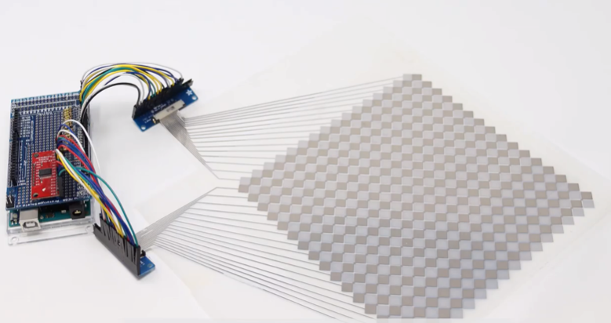

In this problem set series, you will create the multi-touch pad shown above.
In Pset1, you will write a Processing program that automatically generates the fabrication files for the multi-touch pad.
In Pset2, you will print your multi-touch pad, assemble it, and then build the circuit for sensing touch input.
In Pset3, you will write the microcontroller code for reading the touch signals from each electrode.
In Pset4, you will extend your code to draw the touch signals into an image and then extract the touch points via computer vision.
In Pset5, you will write a gesture recognizer that can differentiate between different user inputs.
Each of the five Psets is worth 8%, i.e. in total all psets are 40% of your grade.